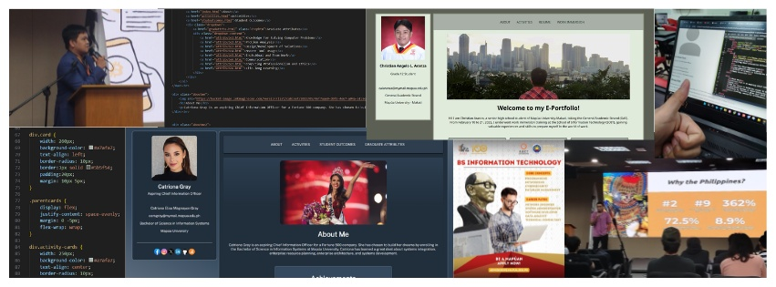

Work Immersion Experience
From February 10 to February 21, 2025, I underwent work immersion training at the School of Information Technology at Mapúa University-Makati. Throughout this two-week work immersion period, I have gotten along with my work immersion classmates and met some professors from SOIT such as Sir Geldof Resuello and Sir Leo Sarne.
During the work immersion period, I have learned more skills that are important in the workplace. The first one is collaboration. During the first week of the immersion, we were divided into groups according to SOIT's college programs, and each group was tasked to recreate the Google Sites e-portfolio templates on GitHub. Initially, we created the e-portfolio template individually to see who had the best design that matched the GitHub template provided to us. Moving forward, we settled on one design, and we collaborated to finish the e-portfolio on time. Collaboration is an important aspect of the workplace since it fosters connection and trust between group members, therefore fueling creativity that leads to a good outcome or achieving their goals.
Another skill I have learned during the work immersion period is leadership. I learned to become a leader who can delegate tasks to my group mates, give feedback on their output, and offer them help when they do not understand something. I made sure that everyone understands the activity and that everyone complied with the task within the given timeframe.
So far, being a work immersion trainee at the School of Information Technology has been a wonderful experience—from accomplishing the assigned activities to sitting in Sir Leo's class on application development. Seeing the School of Information Technology's environment made me so sure to pursue Computer Science next school year.